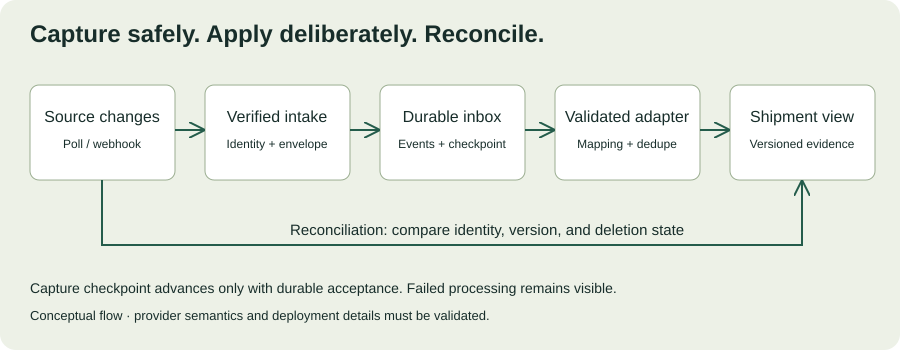

MODULE 03 · SYSTEM DESIGN & DELIVERY
Northstar’s architecture review is complete. The integration owner sends a sandbox endpoint and says, “It’s a REST API. This should take a day.” Your first response contains duplicate shipment records, a status you have never seen, and a pagination token that expires overnight. The hard part is making those boundaries dependable.
This chapter turns Chapter 12’s design into an integration contract, a recovery strategy, and a repeatable test plan. Northstar and all payloads below are fictional training examples. The exercises execute locally and make no requests to a customer service.
Learning objectives
- Discover API behavior before committing to delivery.
- Choose polling, webhooks, or a hybrid based on actual guarantees.
- Map source data without hiding missing, invalid, or unknown values.
- Handle pagination, duplicate delivery, retries, and reconciliation.
- Design a safe rollout with evidence, owners, and recovery instructions.
Allow 100–130 minutes including practice. Prerequisites: Chapters 8 and 12. Deliverables: a contract checklist, validated payload, integration decision record, and recovery runbook.
13.1 Integration discovery is engineering work
A successful request proves connectivity for one identity, payload, and moment. It does not prove authorization, completeness, sustainable throughput, or recoverability. Before building an adapter, obtain a representative sandbox dataset, named API owner, documented quota, and permission to run bounded tests.
| Question | Evidence needed | Why it matters |
|---|---|---|
| Who can call and what can they access? | Identity flow, scopes, record-level permissions, rotation procedure. | A working token may be overprivileged or valid only in a sandbox. |
| How are changes exposed? | Cursor semantics, update timestamps, event IDs, deletion signals. | Missing deletions can leave stale records accessible. |
| What limits apply? | Quota scope, burst behavior, headers, other consumers. | A shared credential’s remaining budget can differ from its advertised limit. |
| How do failures behave? | Error bodies, timeouts, retry guidance, delivery retention. | Safe recovery depends on the provider’s actual contract. |
| Who owns changes? | Version policy, notice period, escalation channel, test environment. | Undocumented schema changes become production incidents. |
Write unknowns as unknowns, with a validation task and owner. If access is delayed, use fixtures to develop the adapter, but label results as fixture-based. Never treat simulated success as evidence that the customer API works.
13.2 Turn requirements into an API contract
Specify methods, paths, parameters, schemas, error responses, authentication, and examples. OpenAPI provides a standard description of HTTP interfaces; a machine-readable description helps generate documentation and validation, but does not prove runtime behavior. OpenAPI Specification ↗
For Northstar’s read-only slice, agree on a logical change-feed operation. The following is an illustrative response, not a real vendor endpoint:
GET /shipment-changes?cursor=<opaque-token>
200 OK
{
"items": [{
"event_id": "evt-1042",
"shipment_id": "S-104",
"depot_id": "DEPOT-A",
"version": 7,
"status": "delayed",
"updated_at": "2026-10-25T09:30:00Z"
}],
"next_cursor": "opaque-page-2",
"has_more": true
}Clarify whether a page is a stable snapshot, whether records can move across pages during pagination, and whether cursor expiration forces a full rescan. Define what constitutes the final page rather than assuming an empty response means completion. Treat opaque cursors as provider-owned values; do not infer their encoding or increment them.
A schema answers which fields are valid. A behavioral contract also explains ordering, duplicate delivery, permission scope, and consistency. Save both, plus the exact version and date tested.
13.3 Polling, webhooks, and reconciliation
| Approach | Useful when | Obligation |
|---|---|---|
| Incremental polling | A reliable cursor or ordered change feed is available. | Bound polling rate, persist checkpoints, recover expired cursors. |
| Webhooks | The source emits authenticated events with useful delivery guarantees. | Verify deliveries, durably accept them, deduplicate, handle missed events. |
| Periodic reconciliation | You need evidence that local state matches the authoritative source. | Compare scope and versions, identify missing records and deletions, repair safely. |
Webhooks can reduce detection delay, but they do not automatically provide complete history or ordered delivery. Polling can be appropriate when the freshness target and quota allow it. A hybrid may use events for responsiveness and periodic reconciliation for completeness.

GitHub’s webhook guidance offers a concrete provider example: validate the sender, use delivery identifiers, and process work asynchronously. Its response deadlines and redelivery behavior are GitHub-specific; inspect the equivalent contract for your customer’s provider. GitHub webhook best practices ↗
13.4 Normalize meaning, not just field names
An adapter translates a source representation into your internal domain model. Renaming shipmentId to shipment_id is easy. Deciding whether “closed” means delivered, cancelled, or archived requires business knowledge. Build a mapping table with the operations owner and preserve the original value for diagnosis where retention permits.
Keep missing, null, empty, and zero distinct when they mean different things. Preserve identifier strings, including leading zeros. Normalize timestamps only after establishing timezone semantics. Reject impossible dates; a string that looks like ISO 8601 may still contain February 30. Do not silently map an unknown status to “delivered.” Quarantine it or use an explicit unknown state that cannot trigger an unsafe action.
Payload validation lab
Validate one fictional source event. Required: nonempty event, shipment, and depot IDs; an integer version ≥ 1; status pending, in_transit, delayed, delivered, or cancelled; and a valid UTC timestamp in YYYY-MM-DDTHH:mm:ssZ form. Extra fields are tolerated but are not copied into the normalized preview. Passing schema checks does not establish authorization or event authenticity.
Try three mutations: change version to the string “7”; change status to “closed”; change the date to February 30. Explain why a parser accepting JSON is different from a domain accepting the event.
13.5 Checkpoints must survive partial failure
Use a durable inbox to separate acceptance from processing. Fetch a page, validate its envelope, durably record its events and the next cursor in one transaction, and only then advance the ingestion checkpoint. Uniqueness constraints on source event identity make page replay safe. Processing workers subsequently apply each event or record a visible failure.
page = fetch_changes(checkpoint)
validate_page_envelope(page)
transaction:
for event in page.items:
insert_inbox_if_new(source, event.event_id, event)
save_capture_checkpoint(page.next_cursor)
commit
# Workers process durable inbox records independently.
# A processing error is tracked; capture progress is not proof of application.This is conceptual pseudocode: transactions, event identity, pagination, and storage limits must match the actual system. Without a durable inbox, advancing the cursor before applying the entire page can skip data after a crash. If the page itself is malformed, stop that capture step and surface the failure; do not advance blindly.
Track both “captured through” and “applied through” progress. If events complete out of order, the maximum completed version is not necessarily a safe global watermark. Use per-entity versions or a contiguous completion frontier appropriate to the provider’s contract.
Recovery decision
The worker crashes after updating the shipment view but before acknowledging the event. The event is delivered again. What should happen?
13.6 Retries need a contract
Classify failures rather than retrying everything. A malformed payload needs correction. A denied request needs investigation of identity and permissions. A transient network error may be retryable, subject to a deadline and safe operation semantics. A 429 response means rate limiting and may include a Retry-After header; respect documented provider guidance and coordinate callers that share a quota. HTTP 429 reference ↗
Use bounded attempts, exponential backoff with jitter, and an overall retry budget. A fixed delay on every client can synchronize traffic into another burst. Record exhausted attempts as visible work requiring recovery, with enough context to diagnose the issue but no secrets in logs.
For writes, determine whether a timed-out operation already happened. Reuse a stable idempotency key for the same intent when supported, and verify retention and payload-matching semantics. Stripe documents one concrete implementation, including differences between its API versions; do not assume another provider behaves identically. Stripe idempotent requests ↗
Northstar’s current slice remains read-only toward the TMS. Before adding approved write-back, validate idempotency or a defensible read-after-timeout recovery strategy, concurrency control, authorization, and an audit trail. Do not infer safe writes from a successful read integration.
13.7 Secure intake and manage credentials
Keep credentials in an approved server-side secret store, scope them to the integration’s required actions, and test rotation without downtime. Use separate identities for environments. Document who can revoke a credential and what operational signal tells you it has stopped working.
For signed webhooks, verify signatures using the provider’s documented algorithm and required raw request bytes before trusting the payload. Apply payload-size limits and authenticated source checks. Where the protocol supplies signed timestamps, validate an acceptable age and clock assumptions. Deduplicate delivery IDs and persist acceptance before acknowledging successful receipt. Signature validation and record authorization solve different problems: a genuine source event still needs the correct tenant and depot mapping.
Never put real credentials or customer data into this browser exercise. The lab checks fictional payload structure only; it does not implement a production webhook receiver.
13.8 Test the integration as a workflow
| Test | Expected evidence |
|---|---|
| Duplicate and older version | One effective update; newer state is not rolled back. |
| Crash after durable capture | Restart recovers pending events without missing a page. |
| Crash after apply | Redelivery produces no duplicate effect. |
| Expired cursor | Controlled rescan and reconciliation restore continuity. |
| Unknown status or invalid date | Visible rejection or quarantine; no silent coercion. |
| Shared quota exhausted | Bounded calls, lag visibility, and safe recovery. |
| Credential revoked or cross-depot access attempted | Clear failure and no unauthorized access. |
| Source deletion | Local visibility and retained history follow the agreed policy. |
Use unit tests for mapping, contract tests for request/response agreement, and sandbox integration tests for real provider behavior. Then run an end-to-end recovery rehearsal. A mock cannot prove the source honors its own cursor contract. Record the fixture version, environment, identity scope, and result for each test.
13.9 Roll out with a reconciliation report
Start with an approved small scope and observe without triggering operational actions. Compare source and local records over a defined interval: count, identity, version, status, and deletion state. A matching count is insufficient if the wrong records are present. Investigate mismatches and re-run repairs through the ordinary validation and authorization path.
Agree on launch criteria before evaluation: representative records covered, no unresolved high-impact mapping errors, acceptable measured lag, negative access tests passing, recovery rehearsal completed, and a named support owner. Choose thresholds with the customer rather than importing arbitrary numbers from this example.
A rollback plan may pause intake or disable the new reader, preserve evidence, and restore the prior workflow. Deleting a checkpoint or replaying the entire feed can cause a second incident if side effects are not controlled. State precisely what is reversible and how to verify recovery.
13.10 Northstar integration workshop
Customer escalation: “Your dashboard has 12,000 records, just like our export, so why are dispatchers seeing yesterday’s statuses?” Investigation shows that source records can appear on multiple pages and the adapter advanced its cursor before committing the last page. A new status, “held_at_depot,” has also arrived.
Spend 25–35 minutes writing a response and recovery plan. Include immediate containment, impact assessment, repair steps, future checkpoint semantics, status mapping ownership, and evidence required to resume. Explain the situation to the operations lead in three sentences before giving the engineering plan.
Compare with the worked outline
Tell dispatchers that freshness is under investigation and identify an approved fallback workflow. Pause any decisions that depend on unverified state. Preserve logs and checkpoints. Compare identities and versions, not only counts, within the affected scope. Repair from a known safe cursor or an approved snapshot using deduplication. Quarantine the new status until operations confirms its meaning. Move capture and checkpoint writes into a recoverable transaction, rehearse both crash boundaries, and resume only after reconciliation and measured freshness support the decision.
| Rubric | Points |
|---|---|
| Customer impact, clear communication, and containment | 20 |
| Evidence-based impact assessment and reconciliation | 25 |
| Safe checkpoint, mapping, and replay design | 25 |
| Tests, owners, and measurable resumption criteria | 20 |
| Explicit uncertainty and scope boundaries | 10 |
13.11 Verified resources and study tasks
Pages checked October 25, 2026. These are reading resources; provider-specific behavior is an example, not a universal API guarantee.
- OpenAPI Specification — describe a response schema and its error cases.
- GitHub webhook best practices — distinguish acceptance, processing, and redelivery.
- Stripe idempotent requests — identify which guarantees must be checked before retrying a write.
- MDN: 429 Too Many Requests — explain how rate limiting changes your client’s behavior.
13.12 Knowledge check
13.13 Completion checklist
You are ready to move on when you can explain exactly what a successful response proves, where the integration’s durable checkpoint lives, how a duplicate is handled, and how you would detect a missed update. The outcome is a dependable customer workflow, supported by a contract and recovery evidence.
Field notes
Which assumption in your next integration deserves a test before implementation?